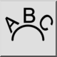

Alatna traka / Ikona:

Ovim alatom crtate tekst uz liniju, luk ili krug.
Pogledajte i priručnik funkcije teksta.
Nakon zatvaranja dijaloga teksta odaberite entitet uz koji tekst treba biti poravnat. Prilagodite opcije u alatnoj traci opcija ako želite i kliknite položaj teksta.